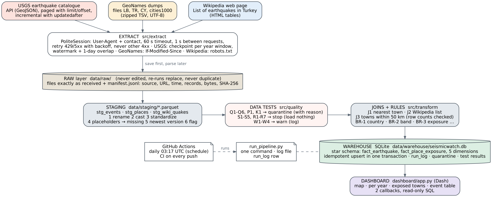
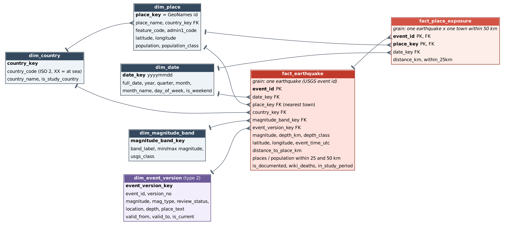
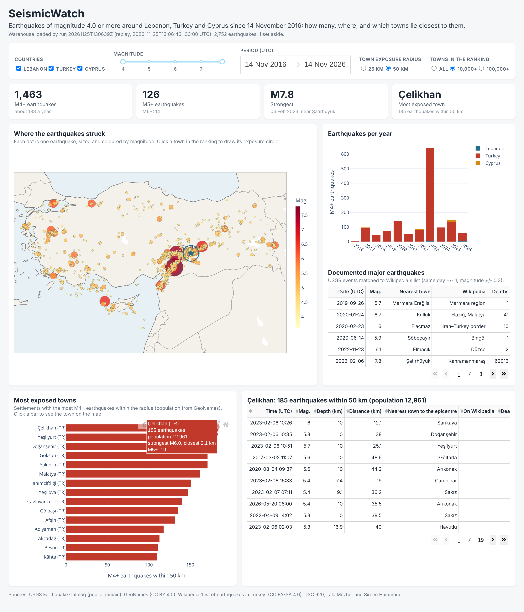

Question. How often do earthquakes of magnitude 4 or more occur around Lebanon, Turkey and Cyprus, where, and which populated places are closest to them? The period is the ten years from 14 November 2016 to 14 November 2026; the pipeline keeps running after that date and the dashboard lets the user move the period.
Users. The pipeline is built for people who plan for earthquakes rather than study them: civil-protection and municipal planners who need to know which towns are hit most often, insurers who price exposure by area, and journalists or residents who want a checked number instead of a headline. They need three things: a count per country and per year, a map, and a ranking of towns by how many earthquakes struck within 25 or 50 km of them. Seismologists already have better tools; we do not compete with them.
This report is written for a data team that takes the pipeline over. Every number below comes from the
run of 25 November 2026 (run ids 20261125T130543Z to 20261125T130639Z), and can be
checked in the warehouse with python scripts/run_report.py.
| Source | Type | Access | Volume (this run) | Update frequency | Terms |
|---|---|---|---|---|---|
| USGS earthquake catalogue (FDSN event service) | API, GeoJSON | free, no key; at most 20,000 events per query; limit/offset paging |
2,753 events, 11 pages, 1.9 MB | minutes; events revised for weeks or years | public domain (U.S. Government) |
GeoNames gazetteer: LB, TR, CY, cities1000 | files, zipped TSV, UTF-8, no header | free download | 306,958 lines, 4 files, 16.2 MB | regenerated daily | CC BY 4.0 (credit GeoNames) |
| Wikipedia, "List of earthquakes in Turkey" | web page, HTML tables | robots.txt allows /wiki/ |
1 page, 3 tables, 100 rows, 0.6 MB | irregular edits | CC BY-SA 4.0 (credit, share alike) |
We profiled each source before writing any cleaning code (python -m src.transform.profile,
full output in docs/profiling.md). What profiling showed:
reviewed, from network
us, of type earthquake, with three magnitude types (mb 2,196,
mwr 300, mww 257). Three problems were hidden in it. 68% of the depths are exactly
10 km, the default USGS uses when it cannot resolve the depth. 298 place texts lost their accented
letters at the source ("Marmara Ere?lisi", "Do?anyol"), mostly in 2019 to 2023; the raw file already
contains the ?. And two ids are the same earthquake: us70009ad8 and
us70009adb are 0.1 s and 1.3 km apart, with the same place text and magnitudes 4.6 and 4.5.
felt is missing for 70% of events and alert for 97%, so we do not use them.cities1000 (2,995 ids in two files). Population 0 means "unknown": of the 62,870 populated
places in our region, 47,559 (76%) have it. dem uses -9999 for "no data" (1,594 lines).
Admin codes such as 07 must stay text or they lose their leading zero. 12,061 places are
PPLX, sections of a city whose people are already counted in the city.Imax).
Magnitudes are text ("7.8 Mw", "6.6–6.9", footnote marks), deaths are text with commas, and the old rows have
no full date (only a year, or "c. 1500"). 16 of the 99 rows have no full date and 6 have no readable
magnitude; 16 rows fall inside our period.
The code follows the same layers: src/extract, src/transform,
src/quality, src/load, dashboard. run_pipeline.py calls
them in order and is the only entry point; GitHub Actions calls the same command every day.
All three extractors share one HTTP client, PoliteSession (src/extract/http.py). Every
request carries an honest User-Agent (project name, repository URL and a contact e-mail read from
.env), a 60-second timeout, and waits at least one second after the previous request to the same
host. HTTP 429 and 5xx answers, and connection errors, are retried up to five times with exponential backoff
(2, 4, 8, 16 s, or the server's Retry-After). Any other 4xx is our mistake, so it is raised at once
and never retried. Every answer is written to data/raw/ exactly as received before it is
parsed (written to a temporary file and renamed, so a crash never leaves half a file) and listed in
data/raw/manifest.jsonl with the URL, parameters, time, HTTP status, number of records, size
and SHA-256.
--full): the period is cut into calendar-year windows.
For each window we ask /count first, then page through /query with
limit=1000 and offset, ordered by time. Closed windows do not change while we page
through them, which keeps offset paging safe, and no window comes close to the 20,000 limit (the largest,
2023, holds 714 events in the box). A _checkpoint.json lists the finished windows, so a run that
crashes continues where it stopped. The count and the pages are compared; a difference is logged.updatedafter = watermark
minus a one-day overlap. The watermark is the largest updated time we have loaded; it is
saved in data/state/usgs_watermark.json only after the load has succeeded, so a failed run
is simply repeated. The incremental query asks for M ≥ 3.5, not 4.0: an event revised from 4.1 to
3.9 would otherwise never come back, and our warehouse would keep the old 4.1 forever. Revised events replace
their old row (staging keeps the newest version of each id); they are never appended.In the run of 25 November, the full extraction made 22 requests to USGS and saved 2,753 events. The incremental run that followed logged:
usgs incremental: 5 event(s) updated after 2026-11-23T20:58:08 (watermark 2026-11-24T20:58:08.040000+00:00 minus 1 day overlap) ROWS raw USGS records 2,758 -> older versions 5 -> quarantined 1 -> loaded 2,752
The five events were re-read because of the overlap; they had not changed, so the warehouse stayed identical (section 8).
GeoNames. Four zip files are downloaded, checked to be real zip files, and read as UTF-8,
tab-separated, without quoting (names contain quotes) and with every column as text first. GeoNames
regenerates its files daily, so we send If-Modified-Since with the date of our last copy: an answer
304 costs nothing and the staging step keeps using the copy on disk. A re-run on the same day overwrites the
same file instead of adding a second copy. Wikipedia. We read robots.txt first, with our
own User-Agent (Wikipedia answers 403 to Python's default one, which made RobotFileParser report
"forbidden" in our first test), check that the page is allowed, download it once and save the HTML before
pandas.read_html reads it. The extractor raises an error if robots.txt ever disallows the page.
Each staging function (src/transform/staging.py) applies the six steps of the Week 5 recipe in the
same order and saves a Parquet file in data/staging/.
| Step | stg_events (USGS) | stg_places (GeoNames) | stg_wiki_quakes (Wikipedia) |
|---|---|---|---|
| 1 Rename | properties.mag → magnitude, coordinates split into longitude, latitude, depth_km | geonameid → place_id, dem → dem_m | columns found by keyword (date, place, mag, deaths), the three tables aligned |
| 2 Cast | epoch milliseconds → UTC timestamps; numbers; nullable integers | ids and populations to integers; admin codes stay text | "6 February 2023" → date; "7.8 Mw" → 7.8; "50,783" → 50783 |
| 3 Standardize | magnitude type, status, type: trimmed, lower case | country and feature codes upper case, names trimmed | footnote marks removed, spacing |
| 4 Placeholders | depth 10.0 marked depth_is_default | population 0 → missing; dem -9999 → missing | "–", "Unknown" → missing, never 0 |
| 5 Versions, duplicates | newest updated per event id; same earthquake under two ids marked | same id in two files: the country file is kept | same date, magnitude and place: one row |
| 6 Flag | Q-tests set is_valid, invalid_reason | not a settlement, population unknown, bad coordinates | no full date, magnitude unreadable |
Every join (src/transform/enrich.py) is a left join from the table whose rows must all be kept,
with validate= and an assert on the row count; the counts are logged and stored in the
join_log table.
| Join | validate | Rows in | Rows out | Without a match |
|---|---|---|---|---|
| J1 earthquakes → nearest settlement (distance, then the place row) | one_to_one, many_to_one | 2,752 | 2,752 | 0 |
| BR-3 earthquakes → exposure counts (25 and 50 km) | one_to_one | 2,752 | 2,752 | – |
| J2 earthquakes → Wikipedia list (BR-4) | one_to_one | 2,752 | 2,752 | 2,736 |
| J3 earthquake × settlement pairs within 50 km → place rows | many_to_one | 151,611 | 151,611 | 0 |
The nearest place and the pairs within 50 km are computed with the haversine formula in numpy, by blocks of 250 earthquakes against the 14,922 settlements. All 16 rows of the Wikipedia list that fall in our period matched a USGS event. The ±1 day window was needed: the Bodrum earthquake of 21 July 2017 (local date) is 20 July 22:31 in UTC.
Six rules, each written once in src/transform/rules.py, with its threshold in
src/config.py and documented in docs/business_rules.md. None reads the clock: the run
date is passed in.
| Rule | Decision |
|---|---|
| BR-1 country | an earthquake belongs to the country of its nearest settlement if that settlement is at most 100 km away, else XX (at sea or remote). We do not trust the USGS place text (see W6). |
| BR-2 magnitude band | 4.0–4.9, 5.0–5.9, 6.0+, lower bound included |
| BR-3 exposure | settlements, and the sum of their population, within 25 and 50 km of the epicentre. PPLX (city sections) and historical or abandoned places are excluded so nobody is counted twice. |
| BR-4 documented | matched to the Wikipedia list: date ±1 day, magnitude ±0.3; closest date, then closest magnitude |
| BR-5 depth class | shallow < 70 km, intermediate 70–300 km, deep > 300 km |
| BR-6 period | 14 Nov 2016 (included) to 14 Nov 2026 (excluded), never after the run date |
27 tests run on every run (src/quality/checks.py). Each has a severity decided in advance:
stop loads nothing and the warehouse keeps the last good data, quarantine sets the failing rows aside
in the quarantine table with the test, the reason, the time and the whole record, warn loads
and logs. Results are stored in data_test_results for every run.
| Severity | Tests | Result on 25 Nov 2026 |
|---|---|---|
| quarantine | Q1 id and time not null · Q2 not deleted at the source · Q3 magnitude ≥ 4.0 (accepted range) · Q4 inside the box, depth -5 to 700 km (value range) · Q5 in the period, not after the run date · Q6 type is earthquake (accepted values) · Q7 not the same earthquake under two ids · P1 place coordinates valid · K1 Wikipedia magnitude readable | Q7: 1 row (us70009adb, "probable duplicate of us70009ad8"); K1: 6 rows; the others pass |
| stop | S1 at least 1,000 valid earthquakes (row count) · S2 no more than 1% fewer than the warehouse holds · S3 event_id unique, not null · S4 place_id unique, not null · S5 row accounting · R1–R4 relationships fact → date, place, country, magnitude band · R5 fact → current version · R6 exposure → fact and place · R7 SQLite foreign key check | all pass; the R-tests run inside the load transaction and roll it back if one fails |
| warn | W1 magnitude type accepted · W2 status reviewed or automatic · W3 ≤ 10% farther than 100 km from a town · W4 ≥ 50 dated Wikipedia rows · W5 ≤ 50% default depths · W6 no lost characters in place text | W5: 1,867 (68%), W6: 298; W3: 127 at sea (4.6%), passes |
S1 and S2 protect against the quiet failure of Week 1: an extraction that returns 12 rows without an error would otherwise replace good data. Q7 was not in our plan; we wrote it after profiling found the duplicate pair. Its rule (two ids within 2 s and 5 km) keeps the record with more information (higher significance). The nearest other pair is 13.7 s apart with magnitudes 4.3 and 4.7: two real earthquakes of the Sındırgı swarm, so the thresholds are tight on purpose.
| Source | Entered | Set aside, and why | Used / loaded |
|---|---|---|---|
| USGS | 2,758 raw records | 5 older versions (overlap) · 1 quarantined (Q7) | 2,752 earthquakes |
| GeoNames | 306,958 lines | 75,239 not populated places · 165,854 far outside the region (cities1000) · 2,995 duplicates · 47,559 population unknown · 389 not settlements | 14,922 settlements |
| Wikipedia | 100 table rows | 1 duplicate · 6 quarantined (K1) · 10 without a full date | 83 dated earthquakes |
Test S5 checks the USGS line on every run: 2,758 = 5 + 1 + 2,752.

src/load/schema.sql). Crow's feet mark the "many" side.Grain of the fact table. fact_earthquake has one row per earthquake, identified by its
USGS event id, in its current version. That is the unit of the question ("how often, where"), and every measure
is a property of one earthquake: magnitude, depth, distance to the nearest town, and the number of settlements and
people within 25 and 50 km. Its keys point to dim_date (one row per day, date_key =
yyyymmdd), dim_place (the nearest settlement, keyed by its GeoNames id), dim_country
(BR-1) and dim_magnitude_band (BR-2).
"Which towns are closest" is a question about pairs, not about earthquakes, so it has its own fact table,
fact_place_exposure, with one row per earthquake and settlement within 50 km (151,611 rows).
Putting the pairs in the main fact table would multiply each earthquake by its number of neighbours and break
every count: the duplicate trap of Week 6. The town ranking is a GROUP BY place_key on this table.
History (type 2). dim_event_version keeps every version USGS published of an event, with
valid_from, valid_to and is_current. A new row is added only when a tracked
attribute changes (magnitude, magnitude type, status, location, depth, place text); the fact row points to the
current version. It is built from the raw layer, which keeps every page we ever downloaded, so it can be rebuilt
from scratch.
Idempotent loading. All keys are natural or deterministic (date_key, GeoNames id, USGS id, fixed keys for
countries and bands), so the same data always gives the same rows. The load is one transaction: upsert the
dimensions, upsert the facts (INSERT ... ON CONFLICT DO UPDATE), delete the rows whose key is no
longer in the data (an event USGS deleted), run R1–R7, then commit or roll back.

python dashboard/app.py) after a click on Çelikhan in the town
ranking: its 50 km circle on the map and its 185 earthquakes in the table. Callback 1 updates the headline numbers,
the yearly chart, the documented earthquakes and the ranking from the filters; callback 2 updates the map and the
table from the filters and the selected town.| 2016* | 2017 | 2018 | 2019 | 2020 | 2021 | 2022 | 2023 | 2024 | 2025 | 2026* | |
|---|---|---|---|---|---|---|---|---|---|---|---|
| Turkey | 4 | 93 | 49 | 71 | 143 | 53 | 79 | 640 | 97 | 133 | 55 |
| Cyprus | 0 | 4 | 1 | 1 | 1 | 2 | 11 | 2 | 6 | 13 | 0 |
| Lebanon | 0 | 0 | 0 | 0 | 0 | 0 | 0 | 2 | 0 | 0 | 3 |
* 2016 from 14 November, 2026 until 14 November.
Where. The map shows two belts: the East Anatolian Fault from Hatay to Malatya and Elazığ, and the Aegean coast with western Turkey (Izmir, Muğla, Balıkesir, the Sea of Marmara). 1,389 of Turkey's 1,417 earthquakes are shallow (but 68% of all depths are the 10 km default, so this class is rough). Lebanon's five are small: three offshore (nearest towns Sarafand and Beirut, 50 to 69 km away), one near Qâna in the south and one near Aïnâta in the north-east. Cyprus's cluster off Paphos.
Which towns. 1,427 of the 1,463 earthquakes had at least one settlement within 50 km, and 262 had a million people or more within 50 km. Among towns of 10,000 people or more, the most exposed are all near the 2023 ruptures: Çelikhan (185 M4+ earthquakes within 50 km), Yeşilyurt (173), Göksun, Doğanşehir and Yakınca (171 each). Among cities of 100,000 or more: Malatya (162), Adıyaman (118), Kahramanmaraş (107), Antakya (70), Samandağ and İskenderun (65). In Cyprus, Paphos (26) leads; in Lebanon, no town has more than three.
Documented earthquakes. The 16 Wikipedia earthquakes of the period are all in the warehouse. Three of them are not counted for Turkey by BR-1, although they hurt Turkey: the 2017 Bodrum–Kos and 2020 Aegean (Samos, 117 deaths in Izmir) earthquakes are nearest to a Greek island, and one 2020 earthquake on the Iran–Turkey border is nearest to an Iranian village. Section 9 comes back to this.
How to run. From a fresh clone: create a virtual environment, pip install -r requirements.txt
(every package pinned), copy .env.example to .env, then python run_pipeline.py
and python dashboard/app.py. The README gives the exact commands; the snapshot workflow on GitHub
Actions follows them on a clean machine.
What the log shows. Each run writes logs/pipeline_<run id>.log and the console: the
mode (full, incremental, replay), every request problem, the staging counts, every join with its row counts, every
test with its severity and result, the warehouse tables with their row counts and fingerprints, the watermark, and
the row accounting. An extract of the incremental run:
INFO run 20261125T130619Z | mode incremental | as of 2026-11-25 INFO usgs incremental: 5 event(s) updated after 2026-11-23T20:58:08 (watermark 2026-11-24T20:58:08.040000+00:00 minus 1 day overlap) INFO join events -> nearest place (attributes) 2,752 rows in, 2,752 out, 0 without a match WARNING test Q7 quarantine FAIL not a duplicate of another event (same earthquake under two ids) | 1 row(s) quarantined WARNING test W5 warn FAIL at most 50% of depths fixed at the 10 km default | 68% of depths are the USGS default: the depth classes are rough INFO test S5 stop PASS row accounting: raw = older versions + quarantined + loaded | 2,758 raw = 5 older versions + 1 quarantined + 2,752 loaded INFO warehouse fact_earthquake 2,752 rows sha256 e9feadb456a9d92d INFO watermark moved to 2026-11-24T20:58:08.040000+00:00 INFO run 20261125T130619Z finished: success in 13 s, warehouse fingerprint b152f50bb04c8535
(The timestamp and logger columns are cut here for width.)
Proof that a re-run changes nothing. scripts/check_rerun.py rebuilds the warehouse from the raw
layer twice and compares a SHA-256 of every star table, rows sorted by key. On 25 November:
| Table | Rows | Run 1 | Run 2 |
|---|---|---|---|
| dim_date | 3,663 | 130d646bea5eb5e6 | 130d646bea5eb5e6 |
| dim_country | 21 | db74eca8ecae33d0 | db74eca8ecae33d0 |
| dim_place | 14,922 | 2a609c89fbfd94fb | 2a609c89fbfd94fb |
| dim_magnitude_band | 3 | d317f964ea96fd90 | d317f964ea96fd90 |
| dim_event_version | 2,752 | be21786036380a07 | be21786036380a07 |
| fact_earthquake | 2,752 | e9feadb456a9d92d | e9feadb456a9d92d |
| fact_place_exposure | 151,611 | cd0e966e97a59f8e | cd0e966e97a59f8e |
The four runs of that day (full, incremental, two replays) all ended with the same warehouse fingerprint,
b152f50bb04c8535, and each added one row to run_log (run id, start, end, mode, status, rows
extracted, staged, loaded and quarantined, failed tests, fingerprint). A unit test also loads the same data twice and
compares the tables, and another checks that a revision updates the fact row and adds a version instead of a
second earthquake.
Scheduling and CI. .github/workflows/daily.yml runs the pipeline every day at 03:17 UTC:
it restores data/ from the Actions cache, runs python run_pipeline.py (incremental), saves the
cache, and writes the run log, the tests and the quarantine to the job summary. .github/workflows/ci.yml
runs on every push: the 36 pytest tests (rules on their edges, staging steps, retries and paging without the network,
the watermark overlap, the checkpoint, idempotent loading, the type 2 history, a rollback on an orphan row), then an
end-to-end run, twice, on tests/fixtures/raw, a sample of 202 real earthquakes with the duplicate pair.
mb, mwr and mww are mixed, and 68% of depths are
the default. USGS is complete for M4+ here, but the national networks (AFAD for Turkey, CNRS for Lebanon) record more
small events; adding one would be a fourth source.data/ to object storage would remove that limit.| Member | Main parts |
|---|---|
| Tala Mezher (202200920) | [to be completed by the team] |
| Sireen Hammoud (202206566) | [to be completed by the team] |
AI assistant. We used Claude (Anthropic) throughout the project. It wrote the first version of the code (extractors, staging, tests, warehouse, dashboard, workflows), the diagrams and the first draft of this report, from our proposal and the course slides. [The team completes here what we checked and changed in its output, for example: which numbers we re-checked against the warehouse, which decisions we made or changed, which parts we rewrote.] We can explain every line of the code, and we are responsible for its correctness.